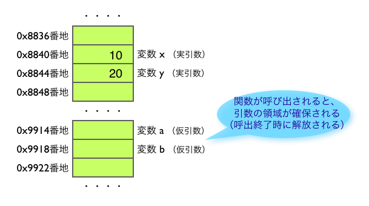
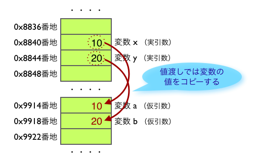
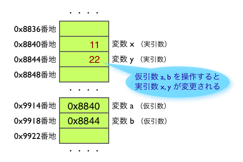
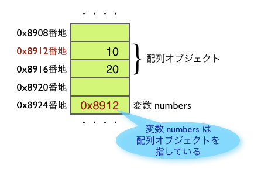
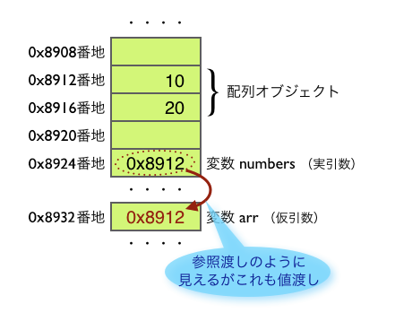

値渡しと参照渡しの違いを理解する
著者: 桑田誠
はじめに
「値渡し」と「参照渡し」とは、関数やメソッドにおける引数の渡し方の種類を表す用語です。初級者向けに簡単に説明すると、以下のようになります。
- 「値渡し (call by value)」とは、変数の値をコピーする渡し方です。
- 「参照渡し (call by reference)」とは、変数を共有するような渡し方です。
本稿ではプログラミングの初級者を対象に、値渡しと参照渡しの違いについて具体的に説明します。また、初級者が特にひっかりやすい「参照の値渡し」についても説明します。
なお本稿の内容は Ruby に限定したものではなく、どのプログラミング言語でも通用します。
対象読者： プログラミング初級者で、値渡しと参照渡しの違いがわからない方
前提知識: 変数の実体はメモリ領域
引数の渡し方を説明するまえに、変数とメモリ領域について説明します。
たとえば、変数 x に 10 が、変数 y に 20 が代入されているとします (list1)。
list1. 変数 x に 10 が、変数 y に 20 が代入されている
x = 10
y = 20変数の実体は、メモリ上に確保された領域です。この場合なら、たとえば fig1 のような状態になります。
fig1. 変数の実体はメモリ上に格納された領域

fig1. では、以下のことが表現されています。
- 変数 x はメモリ番地 0x8840 上の領域であり、値として数値の「10」が格納されている
- 変数 y はメモリ番地 0x8844 上の領域であり、値として数値の「20」が格納されている
もちろん Ruby ではメモリ番地の具体値はわかりませんが、ここでは仮に fig1 のようになっているものとして説明していきます。
次に、引数を 2 つ持つような関数を定義します (list2)。
list2. 引数を 2 つ持つ関数を定義する
def foo(a, b)
a += 1
b += 2
endこのとき、関数 foo() で使われている引数 a と b も変数なので、メモリ上に領域が確保されます (fig2)。この領域は固定された場所ではなく、関数が呼ばれると確保され、関数の実行が終了すると解放されます。
fig2. 引数 a や b にもメモリ領域が確保される 
以上が、変数とメモリ領域の説明です。これらのことを理解していただいた上で、「値渡し」と「参照渡し」について説明します。
値渡し: 変数の値をコピーする
値渡し (call by value) とは、変数の値をコピーする渡し方で、Ruby も値渡しです。 list3. をご覧ください。ここでは変数 x と y を指定して関数 foo() を呼び出しています。
list3. 変数 x と y を指定して関数 foo() を呼び出す
def foo(a, b) # a, b を「仮引数」という
a += 1
b += 2 # a と b を変更する
end
x = 10
y = 20
foo(x, y) # x, y を「実引数」という
puts x #=> 10 # 変更されてない
puts y #=> 20 # 変更されてないこのとき、値渡しでは変数 x と y の値が、引数 a と b にコピーされます (fig3)。
fig3. x と y の値が a と b にコピーされる 
このあと foo() の中身が実行され、a と b の値が変更されます (fig4)。このとき、a と b の値は変更されますがそれは x と y には反映されません。
fig4. a と b の値が変更されるが x と y には反映されない

値渡しでは、変数の値が引数にコピーされるため、次のような性質があります。
- 引数 a と b を変更しても、それが変数 x と y には反映されない。
専門用語では、引数 a と b は「仮引数」と呼ばれ、実際に渡される x と y は「実引数」と呼ばれます。この用語を用いると、上の文章は次のように言い換えられます。
- 仮引数を変更しても、それが実引数には反映されない。
参照渡し: 変数のメモリ番地を渡す
参照渡し (call by reference) とは、変数のメモリ番地を渡す渡し方です。これにより、あたかも変数が共有されたような状態になります。
リスト 4 をご覧ください。これは list3 と同じコードですが、もし Ruby が参照渡しだったとしたら、最後の行の出力結果が list3 とは異なるはずです。
list4. もし Ruby が参照渡しだったとした場合
def foo(a, b) # a, b を「仮引数」という
a += 1
b += 2 # a と b を変更する
end
x = 10
y = 20
foo(x, y) # x, y を「実引数」という
puts x #=> 11 # 変更されている!
puts y #=> 22 # 変更されている!この仕組みを説明します。「add(x, y)」のように関数が呼ばれると、参照渡しでは fig5. のように変数 x と y のメモリ番地が引数 a と b に渡されます。
fig5. x と y のメモリ番地が a と b に渡される

参照渡しでは変数の値は渡されないので、メモリ番地をたどって値を取得します。この場合なら変数 a に格納されたメモリ番地 0x8840 をたどって、10 という値を取り出します。また引数 a や b に別の値を代入すると、メモリ番地をたどって、変数 x や y の値が変更されます (fig6)。このとき、a や b に格納されたメモリ番地の値は変わりません。
fig6. a や b を操作すると、x と y の値が変わる 
このような仕組みのため、参照渡しでは次のような性質があります。
- 引数 a や b を使って、変数 x や y の値を変更できる (a や b を変更すると、x や y も変更される)。
このおかげで、あたかも x と a が、また y と b が、同じ変数を共有しているように見えます。
ところで前のセクションで、a や b は「仮引数」、x や y は「実引数」と呼ぶと説明しました。これらの用語を使うと、上の文章は次のように言い換えられます。
- 仮引数を変更すると、実引数も変更される
参照の値渡し
値渡しでは変数に格納されている値が渡されますが、その値が「参照」を表している場合があります (ここでいう「参照」とは、メモリ番地のことだと思っていただいて結構です)。これを「参照の値渡し」といいます。参照の値渡しでは、あたかも引数 (仮引数) を変更するともとの変数 (実引数) も変更されたかのように見えますが、これは勘違いです。
たとえば list5 の Ruby コードを実行すると、引数で渡された配列の中身が変更されます。
list5. 値渡しなのにあたかも参照渡しのように見える例
def bar(arr)
arr[0] += 1
end
numbers = [10, 20]
bar(number)
puts numbers #=> [11, 20] # 中身が変更されている!前のセクションでは、「引数を変更した場合、値渡しではそれがもとの変数には反映されず、参照渡しでは反映される」と説明しました。ということは、Ruby は参照渡しを行っているのでしょうか。
いいえ、そうではありません。Ruby (に限らず多くのプログラミング言語) では値渡しが基本です。ただし、渡す値が「参照」(= メモリ番地) だった場合に、あたかももとの変数が変更された__ように見えるだけ__です。
この仕組みを説明します。まず Ruby で「numbers = [10, 20]」という文が実行されると、次のことが行われます。
- 配列オブジェクトが作成される (中身は 10 と 20)
- そのメモリ番地が変数 numbers に格納される
これを図にすると fig7 のようになります。メモリ番地 0x8912 と 0x8916 が配列オブジェクトを表していると思ってください (実際はもっと複雑です)。
fig7. numbers = [10, 20] を実行した状態 
fig7 でのポイントは次の通りです。
- 配列オブジェクトとは別に、変数 numbers の領域が確保される
- 変数 numbers は配列オブジェクトのメモリ番地を格納している
変数 numbers のメモリ領域の中に配列オブジェクトが格納されているわけではないことに注意してください。変数 numbers はあくまでメモリ番地を保持しているだけであり、そのメモリ番地が配列オブジェクトを指しています。
ここで、__「変数が指すオブジェクトを変更する」ことと「変数の値を変更する」ことは別である__ことに注意してください。たとえば「numbers[0] = 11」は前者であり、「numbers = [11, 12]」は後者です (list6)。
list6. 「変数が指すオブジェクトを変更する」と「変数の値を変更する」の違い
## 変数 numbers が指す配列オブジェクトを変更する
## (変数 numbers の値は変わらない)
numbers[0] = 11
## 変数 numbers の値を、新しい配列オブジェクトの
## メモリ番地に変更する
numbers = [11, 12]以上のことを理解したうえで、続いて「値渡しで参照を渡す」場合をみてみましょう。
前掲の list5 において、「bar(numbers)」を呼び出した直後の状態を図で表すと fig8 のようになります。
fig8. bar(numbers) を呼び出した直後 
ここでのポイントは次の通りです。
- 変数 numbers の値は配列オブジェクトへの参照 (= メモリ番地) である
- その値がそのまま引数 arr へコピーされる
このように、変数 numbers の値が引数 arr へコピーされているので、これは紛れもなく値渡しです。ただ、渡された値が参照 (= メモリ番地) であるというだけなのです。そのおかげで、__変数 numbers と引数 arr は同じオブジェクトを共有している__状態になります。
ここで、関数 bar() の中身である「arr[0] += 1」が実行されたとします。その状態を図で表すと fig9 のようになります。
fig9. bar() の中身である「arr[0] += 1」を実行した直後

これを見れば分かるように、引数 arr の値は変わっていませんが引数 arr が指すオブジェクトの中身は変更されています。そのせいで、引数を変更するとあたかももとの変数も変更されたように見えてしまうわけです。
ポイントをまとめてみましょう。
- Ruby (や多くのプログラミング言語) は値渡しである。
- 変数が参照 (= メモリ番地) を保持している場合は、それが引数にコピーされる。
- そのため、変数 (実引数) と引数 (仮引数) とが同じオブジェクトを共有することになるので、引数が指すオブジェクトを変更すると、もとの変数のオブジェクトも変更される。
- 「変数を変更する」ことと「変数が指すオブジェクトを変更する」ことは別である。
以上が、参照の値渡し (値渡しで参照を渡すこと) の説明です。おわかりいただけたでしょうか。
なお「参照の値渡し」を、最近では「共有渡し (call by sharing)」と呼ぶそうです。名前こそ違いますが、共有渡しはあくまで値渡しの一種であることに注意してください。
補足事項
いくつか説明を補足しておきます。
-
上の説明では「参照」イコール「メモリ番地」として説明しましたが、これは実装に依存する話であり、必ずしも成り立つわけではありません。つまりメモリ番地ではない方法で参照を実現している場合もあります。ただし多くの場合はメモリ番地を用いていることと、説明の容易さから、本稿では「参照」イコール「メモリ番地」として説明しました。
-
値渡しと参照渡しにおける大きな違いとして、次のことがあります (気になる方は「右辺値 左辺値」でぐぐってみてください)。
- 値渡しでは変数に限らず任意の値を渡すことが可能 (つまり foo(10) や foo(x+1) のような呼び出し方が可能)。
- 参照渡しではメモリ番地を渡すので、必ず変数 (またはそれに類するもの) が必要 (つまり foo(10) や foo(x+1) といった呼び出し方ができない)。
おわりに
本稿ではプログラミング初級者を対象に、値渡しと参照渡しの違いを説明しました。また特に初級者がつまづきやすい、参照の値渡しについても説明しました。
値渡しと参照渡しの違いは、メモリ番地を使って仕組みから説明すると、理解しやすいです。しかし他の書籍などでは、「箱」や「ラベル」に例えて説明しているのが多く、かえって初心者に混乱を招いているように思います。無理に抽象化して説明するより、具体的な仕組みを教えたほうが、回り道のように見えて実は一番の近道ではないでしょうか。
本稿が、初心者の方にとってお役にたてば幸いです。